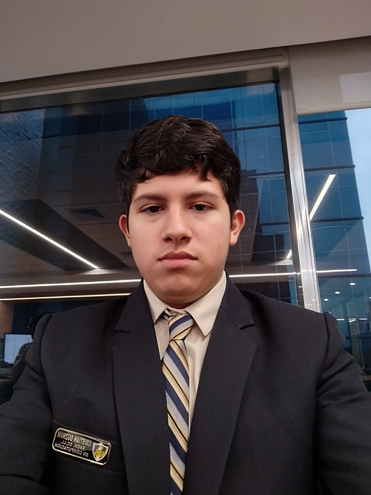
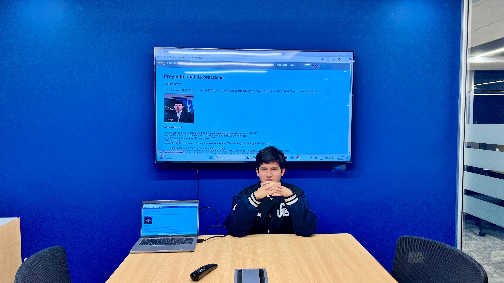
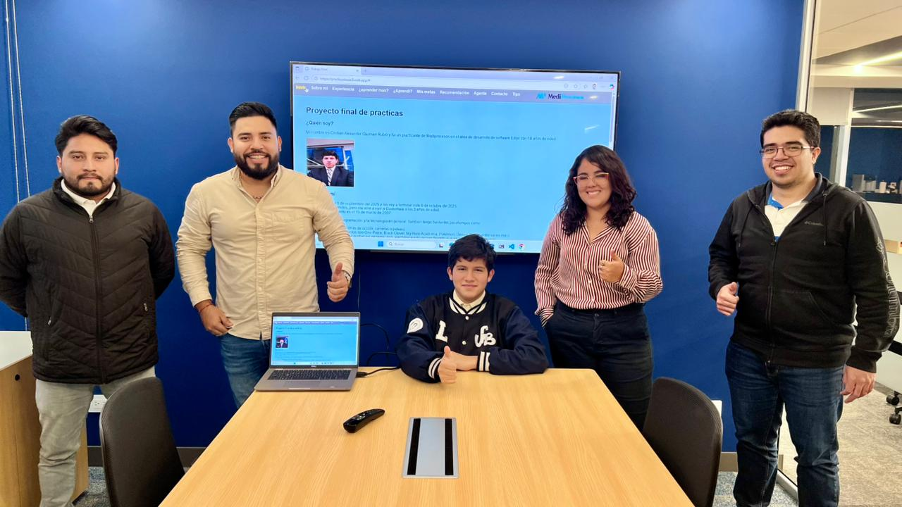

Mi nombre es Cristian Alexander Guzmán Rubio y fui un practicante de Mediprocesos en el área de desarrollo de software Edge con 18 años de edad.


Más sobre mí
Inicié prácticas el 1 de septiembre del 2025 y las voy a terminar este 6 de octubre del 2025.
Nací en Estados Unidos, pero me vine a vivir a Guatemala a los 3 años de edad.
Mi fecha de nacimiento es el 15 de marzo de 2007.
Estado: Soltero.
Me gusta mucho la programación y la tecnología en general. También tengo bastantes pasatiempos como:
Jugar videojuegos (más de acción, carreras o peleas).
Ver anime (mis favoritos son One Piece, Black Clover, My Hero Academia, Pokémon, Demon Slayer, entre varios más).
Escuchar música (me gustan los géneros: pop, electrónica y mi genero favorito que es la música de japonesa).
También me gusta aprender nuevos temas sobre tecnología y cómo podrían funcionar.
Mi experiencia en Mediprocesos
Mi experiencia en Mediprocesos ha sido muy buena, ya que he aprendido bastante en este tiempo que llevo aquí en la empresa. Me enseñaron bastante en el mes que estuve presente dentro de la empresa, estuve aprendiendo HTML, Java, CSS, Python, también me enseñaron a dar lo mejor de mí mismo y no dejarme vencer por errores en mis códigos. El ambiente laboral es muy tranquilo y no hay presión dentro de él. Los encargados y mi jefe inmediato que tuve fueron muy buena onda conmigo. En ningún momento de mis prácticas me sentí mal de estar en ese ambiente tan tranquilo, y los compañeros con los que trabajé me trataron muy bien, gracias a ello puedo decir con firmeza que hacer prácticas en Mediprocesos no es para nada una mala experiencia; al contrario, es muy bonito realizarlas porque me recibieron muy bien y me hicieron aprender de mis errores, así aprendiendo mucho mejor lo que me estaba equivocando.
¿Qué me hubiera gustado aprender?
Lo que me hubiera gustado aprender sería cómo funciona el código de las aplicaciones que han realizado en la empresa y cómo logran desarrollarlas otra cosa que me hubiera gustado aprender seria a como armar, desarmar y como arreglar laptops.
¿Aprendí?
Sí, aprendí bastante a lo largo de estas semanas. Mi jefe y encargados me dieron retos que yo pensaba que eran imposibles de realizar, y luego de intentarlo me enojaba porque no lo podía lograr. Pero mi jefe y encargados me daban el empujón para poder realizar lo que creía imposible y me hicieron aprender de mis errores en lo que me asignaban en HTML, Java, CSS, Python, APIs, Git y GitHub. Me ayudaron a tener paciencia con los errores que tenía, me corregían cuando estaba equivocado y me explicaban cuando estaba muy perdido.
Metas a futuro
Mis metas para el próximo año serían lograr ser alguien en Estados Unidos y adaptarme a como son allá y lograr conseguir un empleo de creador de videojuegos en entrenamiento y siguiendo cursos otras metas que tengo en algun futuro lejano serian:
Casarme con una japonesa y talvez llegar a formar una familia
Ser creador de videojuegos profesional
Ayudar a las personas que se encuentran sin hogar o alimentos
Que mis hermanos sean exitosos tambien
Ser alguien en la vida que luche por sus metas
Ser una buena persona y seguir creyendo en Dios apesar de las dificultades que se presenten
¿Cómo me veo en 5 años?
En 5 años me veo en Estados Unidos con un trabajo estable creando videojuegos.
¿Recomendaría el proceso de prácticas en Edge Mediprocesos?
Claro que lo recomendaría, ya que su método de aprendizaje se basa en cometer errores y aprender de ellos para no volver a cometerlos. Como dijo un sabio un día: "Si te explico no vas a entender" por Heinz Keydel. Tambien es un ambiente muy bonito en el cual uno no llega a sentir el tiempo por estar entretenido realizando lo que a uno le gusta que es programando.

Interactúa con el agente que yo hice
El agente que hice lo que realiza es corrección de textos o oraciones el usuario ingresa su texto o oración y el agente los corrige y los muestra en formato JSON, este lo realice en Python y lo conecte a HTML.
EN PROCESO
Contacto
Más sobre mí
Yo creé esta página web cuando fui practicante, conté mi experiencia en Mediprocesos y un poco sobre mí.
Estoy dispuesto a ayudarte en lo que necesites.
Puedes contactarme a través del correo: crismortal0097@gmail.com
Si llegas a necesitar ayuda con tus practicas te puedo ayudar, mas no resolverte todo.
Tecnología
Hecho en HTML
Deploy con Firebase
Estilos con CSS
Interactividad con JavaScript
Tips para tus prácticas
Consejos para tener éxito en tus prácticas profesionales
Comunicación: Si no eres una persona muy comunicativa te entiendo yo fui así pero en un ambiente laboral la comunicación es muy importante a la hora de hacer un trabajo en equipo.
Paciencia: A veces las cosas no salen como uno quiere y eso puede frustrarte pero debes tener paciencia y seguir intentando a pesar que el código no compile.
Aprender de los errores: Si cometes un error no te frustres aprende de él y no lo vuelvas a cometer y pide ayuda si es que la llegas a necesitar hasta los mas expertos pueden llegar a necesitar ayuda.
No te quedes de brazos cruzados: Si no tienes ninguna asignación busca que hacer, no te quedes esperando a que te ponga algo que hacer, TU mismo busca como puedes llenarte de conocimiento dentro de la empresa
No todo es lo que parece: Los colegios nos dan a entender que en nuestras practicas van a hacer muy estrictos o que por cualquier cosa nos las van a anular, pero la realidad es de que eso es una MENTIRA, las practicas son para llenarnos de conocimiento para poder aplicarlos a donde vayamos, si logramos dar el 100% de nosotros esas practicas van a estar mas que ganadas.
Diviértete: Si te gusta lo que haces y te diviertes haciendo lo que te gusta el tiempo va a volar y no te vas a dar cuenta cuando ya terminaste tus practicas.
Se tú mismo: No trates de ser alguien que no eres, se tu mismo y da lo mejor de ti.
Explora:Busca nuevas formas de ser de tu trabajo mas productivo, si no te funciona un metodo prueba otro y si sigue sin funcionar busca y busca hasta encontrar uno que te funcione, por ejemplo a mi me gusta trabajar con musica me concentro mas en lo que estoy haciendo, esta cancion me ayuda a concentrarme.